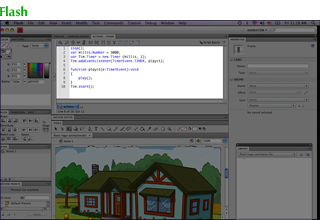

我相信动态图像有一天会成为视觉艺术和视觉展示的主要载体. 这种载体目前还处于初期 -- 使用这种载体进行工作更多是摸索而不是艺术性的表达. 革命难以发生, 除非等到有一种工具可以让美术家们绘制动态的图像.
这篇随笔描述了什么是动态图像, 什么是动态制图, 为什么这个主题如此重要, 以及一些初始的项目和想法.
如果任何内容激发了你去探索这样一些概念, 我很有兴趣了解你收获了什么.
动态意味着图像随着你输入的内容而改变. 一张动态的图像在不同场景下看起来是不同的.
下面列举了一些不同种类的图像:
这是张静态图像. 每一次你看到, 它完全是一样的.
这是 静态动画. 每次你看到, 它也都是一样的.
这是动态图像的一些实体. 我并不是一张一张绘制这些图片 -- 而是做了一张"主"图像, 然后改变参数. (点击来随机改变一些参数.)
这是张交互式的图像. 尝试拖拽一下. 动态图想可以是交互式的, 但也不是必须是那样的.
目前在书上, 网站上看到的图片, 大多数都是静态图像 -- 一次性的, 不能适应他们周围的环境, 不能反映新的想法或者信息, 不能回应观众的需求和兴趣.
这里有一些目前能看到的某种程度上的动态图像:
总体上说, 当今的动态图像更多是限制在商业应用当中, 展示出相对低的艺术成熟度, 强调技术胜过强调艺术表达(更多关于载体而不是信息). 这些是一种艺术形态处于初期的症状.
制图表示美术家通过直接操作图像本身来创造图像, 而不是通过操作一些并不是类似于艺术工作的中间表示.
下面每一张图片的边上, 我都放了画布对应美术家代表性地用于工作的截图:
作品
画布
静态图像.
静态动画.
动态图像.
交互图像.
你看到特别的地方么? 前面两个例子, 美术家直接在画布上制作图像. 这些图形可以被绘制, 然而它们不是动态的. 后面两个例子, 画布由很多页的抽象的文本组成, 美术家需要在脑海里维护一份错杂的文本和图像之间的映射. 这些图像上动态的, 但无法被绘制.
接住当今的工具, 动态的设计需要通过编写文本来创建图像. 仅仅是因为我们很习惯这样的处境, 我们没有认识到它是多么奇葩多么原始.
下面是一些创建动态图像的常用的环境. 我把画布中的一些部分高亮出来了表示美术家用它来设计动态的行为.
Flash.
Processing.
Nodebox.
Context-Free.
Quartz Composer.
Scratch.
很多个例子当中, 输出的图像跟代码并列摆放. 很多例子当中, 画布是(所谓的)"可视化", 用方块形状的代码替代了语句. 然而没有一个例子当中美术家是通过操作图像本身来创建动态的行为的. 这就不是绘图.
Magic Ink 是我关于为什么动态图像很重要的论述. 总体的关于动态绘图工具的动机在 Magic Ink 的 Substroke 和一个章节做了展开.
这里还有更多的我为什么在乎所有这些的个人原因.
我热衷于帮助人们提升能力去理解, 其中视觉化的展示对于理解很多概念是至关重要的. 因为我们的工具多么脆弱, 当应该进行描绘时我们常常要借助描述. 仅有的几种可视化的展示几乎都是静态的. 一次性的图像, 对于特定场景的繁琐的绘制. 单调通用的图像, 给每个读者都用一样的.
动态图像对于可视化的解释是理想化的, 因为传达用来表示信息的参数. 随着信息改变, 图像也进行改变. 比如我们可以绘制一张解释一个国家碳排放的图像. 哪个国家?任何国家 -- 只要接入数据. 静态的美术家忙于为每个国家绘制一次性的静态图片, 而不是一张通用的图像.
动态图像也不需要是一个尺寸对付全部需求. 动态特想可以是适应特定读者和读者的上下文. 它能够告诉读者他实际上想要知道什么, 而不仅仅是美术家猜想到的每个人想要知道什么.
"用户界面"明显是一种动态图像的类型. 我花了一些年穿梭于 Apple 不同的 UI 设计小组, 我也遇到了很多聪明的设计师, 这些设计师不能够创造真实的事物. 他们只能猜想. 他们会在 Photoshop 里绘制实物模型, 可能在 Keynote 上加上动画, 可能在 Director 或者 Quartz Composer 里加上简单的交互. 但这些设计师不能产生任何跟他们想表达的一样的东西. 而是依赖于工程师把他们的想法翻译到一行行的文本上. 即便在苹果, 设计师的精英统治与众不同, 还是会有很淡的无助的暗流, 这种羞怯和犹豫因为没有做到自力更生.
常常有说法把这种无助归结于"技能组合的互补"或者相似的废话. 而真相是: 作家能够写整本书. 音乐家能够演奏乐曲, 动画制作者能够表演短剧, 画家能够绘制画作. 但是大多数动画美术家不能够完成他们自己的创作, 这让我很伤心.
设想你要我我的图像上拿一些元素, 把它们构建到你自己作品当中. 对于静态的图形, 很简单 -- 你打开我的源文件(比如用 Illustrator), 复制粘贴对象到你的里边. 即便你没有源文件, 你至少还可以从合并图层以后的输出文件或者截屏当中取出元素.
对于目前的动态图像, 复用是场噩梦. 图像是用很多页的代码来描述的. 你需要浏览全部代码, 弄明白每个部分做了什么, 弄明白怎么在不破坏依赖的情况下从它的环境当中分离出你要的代码, 而且弄明白怎么把外部代码整合到你的里面, 这可能用来不同的约定, 类型甚至编程语言.
动态图像的绘制工具应该让分享元素变得跟复制粘贴一样简单. 我相信载体的进化需要这样轻松的分享. 美术家一定要能够基于彼此的作品创作.
我现在还不清楚. 这也是为什么现在是个研究项目.
我前面已经探索了两种方式. 在 Magic Ink 的 Designing a Design Tool 章节, 我描述了美术家基于一些规定参数的集合绘制静态的图像, 由工具来推断出参数和图像元素之间的具体映射. Substroke 基于参数化的变换, 其中美术家绘制的历史在每个阶段都被参数化.
我认为两个方式都有着前景. 不过两者都是野心勃勃想要无中生有设计出通用的动态绘画工具. 我最终相信, 或者至少是猜想, 这样一个雄心勃勃的目标最好是通过逐步增量实现的.
我热衷于探索一系列小型的, 独立的项目, 用来完成特定的动态的和"元绘画"(meta-drawing)任务. 重点在制作小型工具, 每一个都能马上用起来. 希望在这些工作中获得的洞察力可以在一段时间之后导向一种通用工具或者概念框架.
我对于这些小工具要一对想法. 我会在一篇独立的笔记当中描述它们.
继续关注. 或者更好的话, 尝试自己做点事情.